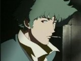

|  | The main character of the show. He says that he is an “old-fashioned” cowboy, but he is a bounty hunter. He is good with a gun and is also a quick hand-to-hand fighter. He gets a lot of his bounty information from a TV show called “Big Shot”, that is until it goes off the air in Session 23. He also never listens to directions, even those from Jet. He doesn’t like kids or animals all that much and he used to be part of the Red Dragon Syndicate with Vicious. He also was in love with a woman named Julia on Mars. One of his eyes is fake since he lost his real one in an accident. He says that now he sees the past in one eye and the present in the other eye. Spike is the epitome of cool and won't hesitate to do something even if it's dangerous. With a slacky and stylish fighting, he's more than your average cowboy. But at the end of the series, Spike must confront Vicious once more and that will determine his overall destiny. |
| He lives with Spike and he used to work for the ISSP. He has a metal arm, but they tell you how he lost his real arm later on. He is also pretty good with computers and is the Bebop’s tech whiz until Edward comes along. He used to be called the “Black Dog”, because he “bit into things and never let go” (not literally of course). Also, he had a thing for a girl named Alisa. He's the caretaker of the Bebop crew and he cooks and keeps the ship fit. He's also very aware with the newest bounties thanks to some connections he has. |
| Carrying a very large debt. She also has a 6 million bounty on her head and appears first in Session 3. She’s a pretty good pilot too. Spike loses her bounty, but she later joins the Bebop crew. She’s obnoxious and can be a bit of a troublemaker. She was actually in cold sleep for 54 years because she was involved in a serious accident and the medical treatment back then could not cure her. In Session 18 she receives two packages, a beta tape and a beta tape player. It reveals more of her past, but she still can’t remember. In Session 24 she finally remembers all of her past. At the end of the series, she grows close to the Bebop crew and very close to Spike. |
| A talented hacker that first appears in Session 9. She joins the crew of the Bebop and quickly establishes a friendship with Ein, mostly because they are always left behind together. Ed is strange, to say the least. You'll find her doing odd things in the Bebop and she loves to play with Ein. Her (or it could be a him?) full name is Edward Wong Hau Pepulu Tivrusky the fourth. In the end, she leaves the Bebop to stay with her father. She brings Ein along too. |
| Used to be in the Red Dragon Syndicate with Spike, and the two obviously have a bad history. His weapon of choice is a sword. He never feels remorse for anything or anyone. Even when Lin sacrificed himself to save him, but Vicious seemed to not even care. He can’t be the successor to leadership of the Red Dragon Syndicate, so he betrays them and tries to kill the leaders. He gets sentenced to death, but he escapes and kills all those who won’t obey him. He then goes after Spike. |
| She first appears in Session 25 (not counting flashbacks earlier). She and Faye meet, but Faye doesn’t realize who she is at first. It turns out that she was actually supposed to kill Spike. But she can't kill him because she's in love with Spike. Spike offered her to leave the syndicate but she was afriad that if she left, Vicious would find her. Instead she stays behind and close to the end of the series, she meets Spike once again. |